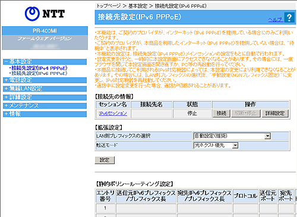

| 本機能は、ご契約のプロバイダがインターネット接続（IPv6 PPPoE）サービスを提供している場合のみご利用いただけます。インターネット接続（IPv6 PPPoE）サービスを提供していない場合は、「待機中」と表示されます。 |
| 本機能の設定は、接続先設定（IPv4 PPPoE）のメインセッションの設定内容を元に自動で行われます。 |
| 通話中に設定変更を行った場合、通話が切断されることがあります。 |
| 設定値を選択したあとに［設定］をクリックすると設定内容が反映され、設定内容が保存されます。 |
| ※「Web設定」画面に表示されているボタンについての説明は こちら |
|  |
| ［接続先の情報］ |
| 「操作」欄の［接続］［切断・停止］をクリックすることで、IPv6 PPPoEの接続と切断・停止を行うことができます。 接続先の詳細設定を行うときは、「セッション名」または「操作」欄の［詳細設定］をクリックします。 ※「接続先名」は、接続先設定（IPv4 PPPoE）のメインセッションの設定を元に自動で設定されます。 |
| 接続先詳細設定（IPv6 PPPoE）の説明はこちら |
| ［拡張設定］ | ||||||||||||||||||
|
||||||||||||||||||
| ［静的ポリシールーティング設定］ |
| 静的ポリシールーティングを設定します。最大128件登録することができます。 静的ポリシールーティングを設定したいエントリ番号の「操作」欄の［編集］をクリックして設定します。静的ポリシールーティングを削除するときは［削除］をクリックします。 |
| 静的ポリシールーティング設定の説明はこちら |
| ［接続先の設定］ | ||||||||||||||||
|
||||||||||||||||
| ［IPv6 DNSサーバアドレス］ | ||||||||||||||||
|
||||||||||||||||
 認証方式（初期値：自動認証（推奨）） 認証方式（初期値：自動認証（推奨）） |
|
| PPPoE認証時の認証方式を設定します。 | |
|
|
|
|
|
|
| ［PPPキープアライブ］ | ||||||||||||||||
|
||||||||||||||||
| ［拡張設定］ | ||||
|
||||
| ［IPv6パケット フィルタ設定（PPPoE）］ |
| IPv6パケット フィルタを設定します。最大128件登録することができます。 IPv6パケット フィルタを設定したいエントリ番号の「操作」欄の［編集］をクリックして設定します。IPv6パケット フィルタを削除するときは［削除］をクリックします。 |
| IPv6パケット フィルタ設定（PPPoE）の説明はこちら |
| 静的ポリシールーティング設定では、IPv6パケットの転送先を個別に設定できます。 |
| ［静的ポリシールーティング エントリ編集］ | |||||||||||||||||||||||||||||||||||||||||||||||||||||||||||||||||||||||||||||||||||||||||||||||||||||||||||||||||||||||||||
|
|||||||||||||||||||||||||||||||||||||||||||||||||||||||||||||||||||||||||||||||||||||||||||||||||||||||||||||||||||||||||||
| IPv6パケットフィルタ設定では、IPv6パケットのフィルタにより、本商品を通過するIPv6パケットを制限することができます。 IPアドレス、プロトコル、ポート番号などの条件により、中継するIPパケットを通過あるいは廃棄するように設定することができます。 「拒否」の条件に合致したIPパケットは廃棄され、「許可」の条件に合致したIPパケットのみ通過が許可されます。 なお、SPI機能を使用する場合、通過が許可されたIPパケットに対応する応答IPパケットは廃棄条件を無視し、通過が許可されます。 |
| ［IPv6パケットフィルタ設定（PPPoE）エントリ編集］ | ||||||||||||||||||||||||||||||||||||||||||||||||||||||||||||||||||||||||||||||||||||||||||||||||||||||||||||||||||||||||||||||||||||||||||||||||||||||||||||||||||||||
|
||||||||||||||||||||||||||||||||||||||||||||||||||||||||||||||||||||||||||||||||||||||||||||||||||||||||||||||||||||||||||||||||||||||||||||||||||||||||||||||||||||||